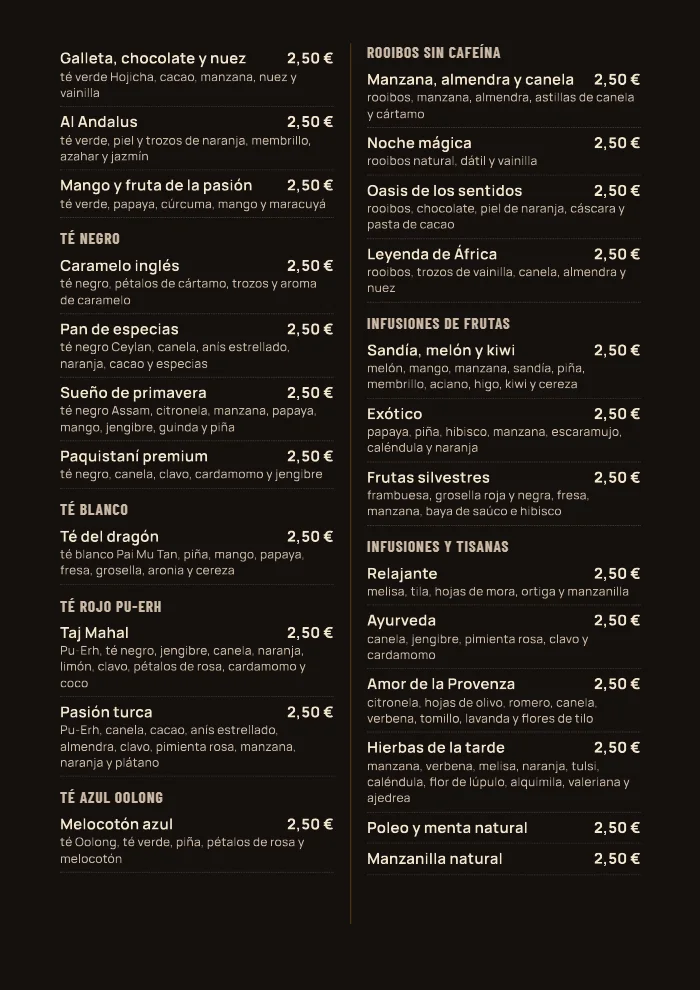

Así quedaría la carta en papel
A4 en vertical, como un libro. Tapas de madera con el logo grabado, hojas plastificadas y tornillos para cambiar una hoja cuando cambie un precio.
Cerrada
Alfredo
Café & Copas
La carta
Abierta


Tapas de madera
Contrachapado de 3-4 mm, barnizado mate, con el logo grabado con láser. A juego con la placa de las mesas.
Hojas A4
4 hojas de cartulina mate de 300-350 g, impresas por las dos caras y plastificadas: no se mojan y se limpian con bayeta.
Tornillos de encuadernación
Tres tornillos en el lomo. Se abren con una moneda para cambiar solo la hoja que cambie.
Dentro
Portada con el logo y el QR, y la carta entera (casa y heladería) con letra grande a dos columnas.
Interior a elegir: negro y dorado (el del dibujo) crema melocotón